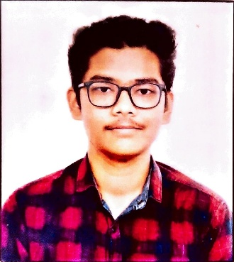

Jaydeep Borse

Summary
I am passionate about learning new skills, and dedicated towards the work i do.
Education
-
Completed 11th and 12th in KT Collage.
-
Completed Bachalor of Engineering(Information Technology) from Sandip Collage.
Work Experience
Nothing to show now
Skills
Awards and Certifications
- Certificate for Poster Design Competition
- Certificate for HTML and CSS of FCC
Other